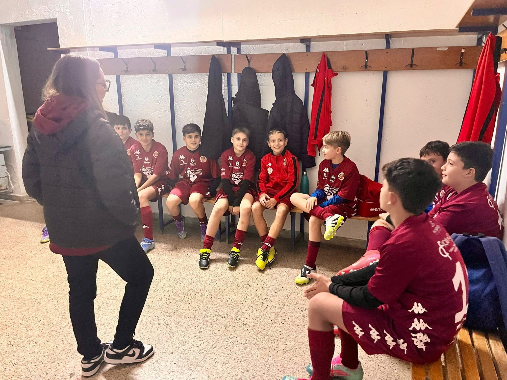
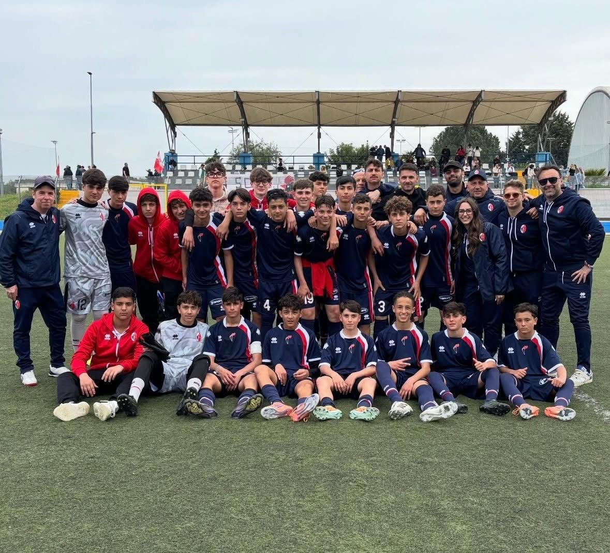

La differenza tra chi si allena e chi si allena davvero
Cosa separa un atleta che migliora da uno che ristagna? Non è solo il tempo passato in palestra.
Ilaria Dammicco
Pubblicato il 15 Maggio 2026 · 6 min di lettura
Quante ore di allenamento servono per diventare il meglio di sé? La risposta, forse, non è quella che ti aspetti.
Ogni giorno migliaia di atleti riempiono palestre, campi e piscine. Seguono programmi, eseguono serie, corrono chilometri. Faticano. Sudano. Eppure, solo una piccola percentuale di loro arriva realmente a esprimere il proprio potenziale. Perché?
La differenza non sta nel volume di allenamento, né nella qualità degli esercizi. Sta in ciò che accade tra una serie e l'altra, in quello spazio mentale che separa l'esecuzione fisica dalla consapevolezza.

Il pilota automatico è il nemico
Quando un gesto diventa automatico, il corpo lo esegue senza che la mente sia davvero presente. Ed è qui che nasce il paradosso: più si ripete un movimento, meno lo si vive consapevolmente. L'atleta "mediocre" esegue. L'atleta "eccellente" esegue e osserva sé stesso mentre lo fa.
Questa capacità si chiama meta-cognizione: la possibilità di monitorare i propri processi mentali in tempo reale. Non è un dono, è un'abilità che si allena. E chi la sviluppa, smette di essere un esecutore e diventa un architetto della propria performance.
"La differenza tra un buon atleta e un grande atleta è la capacità di allenare la mente con la stessa intensità con cui allena il corpo."
Cosa cambia quando alleni la mente
Un atleta mentalmente allenato non è semplicemente "più concentrato". È in grado di:
- Riconoscere i segnali di ansia o tensione prima che diventino prestazionali
- Reindirizzare l'attenzione quando la mente scivola via
- Accettare l'errore come informazione, non come fallimento
- Sostenere la fatica senza perdere la lucidità strategica

Un allenamento dentro l'allenamento
Il mental training non sostituisce il lavoro fisico: lo potenzia. Può essere integrato in ogni fase della preparazione, dalla seduta tecnica alla gara. Anzi, è proprio nei momenti di maggiore stress che la preparazione mentale fa la differenza.
Alcuni strumenti concreti che utilizzo nei percorsi con atleti:
- Imagery — la ripetizione mentale del gesto tecnico, che attiva gli stessi circuiti neurali dell'esecuzione reale
- Routine pre-performance — sequenze di comportamenti che creano uno stato mentale stabile e riproducibile
- Respirazione consapevole — per regolare l'attivazione del sistema nervoso in pochi secondi
- Self-talk strutturato — sostituire il dialogo interno sabotante con istruzioni operative chiare
La domanda che ogni atleta dovrebbe portarsi è: sto solo eseguendo, o sto costruendo qualcosa?
Dal campo alla vita
Quello che impari nello sport si trasferisce in ogni ambito della vita. La capacità di gestire la pressione, mantenere la concentrazione, trasformare un errore in apprendimento. Sono competenze che valgono sul campo quanto in ufficio.
Forse è per questo che i grandi atleti non sono solo modelli sportivi: sono maestri di disciplina mentale. E la loro lezione più grande è che la mente non è un ostacolo da superare, ma un muscolo da allenare.
Ogni grande risultato
inizia da un primo passo.
Se questo articolo ti ha toccato, significa che c'è già un'area su cui lavorare. Il prossimo passo è trasformare la consapevolezza in azione.